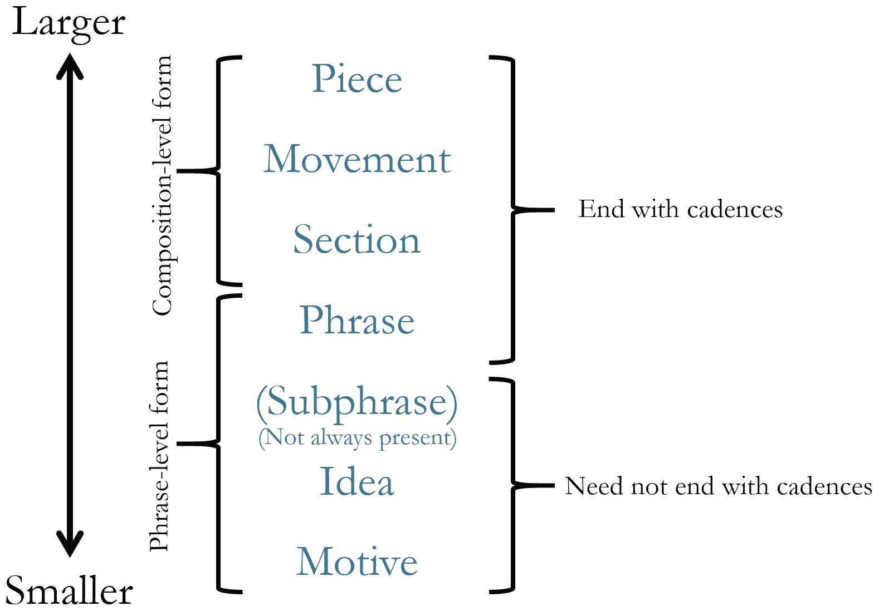
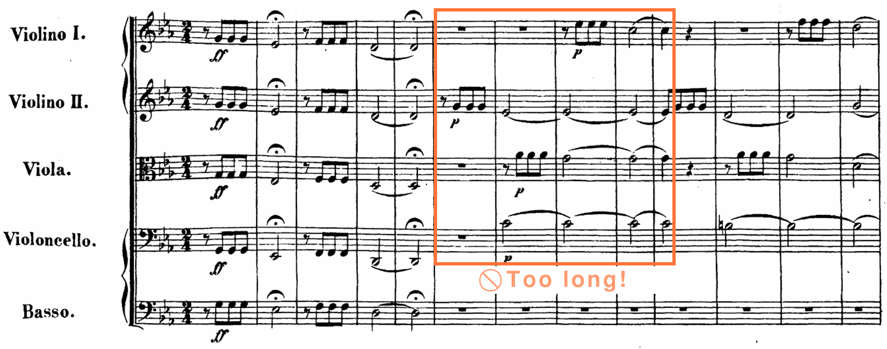

Open Music Theory：繁體中文版
樂句層次曲式的基礎概念
查看英文原文
Key Takeaways
This chapter describes the hierarchy of musical form, motives, and segmentation analysis.
- Musical form can be understood as a hierarchical grouping of units.
- The smallest of these groupings is a motive, which is a regularly recurring unit of music that’s typically smaller than an idea. In an analysis, we circle and label motives that recur and are transformed across a work. Avoid identifying large melodies or portions of melodies as motives—motives are short!
- A segmentation analysis is a way to show the grouping units of a passage or whole piece. To do a segmentation analysis, we begin by identifying phrase endings, which are often marked by cadences. Then, we divide phrases into smaller units using square brackets above the score to show the idea level.
{kind=link}

Larger／Smaller：較大／較小。
- 由上至下：Piece＝作品；
- Movement＝樂章；
- Section＝段落；
- Phrase＝樂句；
- Subphrase＝次樂句（Not always present：不一定出現）；
- Idea＝樂思；
- Motive＝動機。
- Composition-level form＝作品層次的曲式；
- Phrase-level form＝樂句層次的形式。
- 右側上組（作品至樂句）：End with cadences＝以終止式結束；
- 下組（次樂句、樂思、動機）：Need not end with cadences＝不必以終止式結束。
例 1 看起來很簡單，但實際的層級關係更複雜。例如，有時兩個層級會合而為一：一個樂句就可能構成作品中的整個段落，因此不一定每次都有必要區分各個層級。最好把例 1 當成參考，而不是嚴格界定曲式層級的規則。
查看英文原文
Hierarchy
One way to understand musical form is as a hierarchical grouping of units. Example 1 shows that a piece contains movements, movements contain sections, sections contain themes, themes contain phrases, and so on.
Although the diagram in Example 1 looks quite simple, the relationships between the levels are a little more complicated in reality. For instance, sometimes two levels are collapsed into one: a single phrase may comprise an entire section of a work, so it may not always be worthwhile to distinguish between each level. It’s best to think of Example 1 as a guide and not as something that strictly defines formal levels.
This chapter, along with the three that follow it, are focused on phrase-level form, or the various ways in which a phrase may be constructed of motives, ideas, and sometimes subphrases (which will be discussed in later chapters).
動機不一定非要重複，但會重複的動機通常最值得討論，因此我們往往著重於在一段音樂中反覆出現的動機。
動機有許多類型，例如節奏、音高、輪廓或音色動機；不過，單獨使用「動機」一詞時，通常是指以音高為基礎的動機。若一個動機主要靠節奏設計讓人辨認，就會明確稱為「節奏動機」。
動機在作品中再現時，往往會有所改變。常見的變化方式包括：
初次被要求辨認作品中的動機時，人們往往會選擇過大的片段，例如整個主題。例 5 展示分析貝多芬第五號交響曲開頭時常見的錯誤：把一段過長、不適合視為動機的音樂當成動機。更有用的分析方式，可參考例 3 的影片。
{kind=link}

- Too long!：太長了！Violino I／II：第一／第二小提琴；
- Viola：中提琴；
- Violoncello：大提琴；
- Basso：低音聲部。
- 橘框示範將過長片段視為單一動機的問題；
- 原譜力度及奏法記號保留。
動手練習！1：動機分析
這個動手練習會引導你分析約翰・威廉斯〈Duel of the Fates〉開頭的動機。請先聆聽開頭（0:15–0:26），再開始測驗。
查看英文原文
Motives
A motive is like a little snippet of a melody. It’s a regularly recurring unit of music that’s typically smaller than an idea (the focus of the next section of this chapter). Each video in Examples 2–4 discusses a motive from a different work. They all contain the same basic information, so you might choose to watch the one that interests you the most, or you might watch all three.
Example 2. Motivic analysis of John Williams, “Journey to the Island” (1:20–1:46) and Main Theme from Jurassic Park (0:48–1:06).
Example 3. Motivic analysis: Ludwig van Beethoven, Symphony 5, I (0:00–0:27).
Example 4. Motivic analysis: Lin-Manuel Miranda, “Aaron Burr, Sir” from Hamilton (0:12–0:16).
While a motive does not necessarily have to repeat, those that do are usually the most interesting ones to talk about, so we tend to focus on motives that recur throughout a passage.
There are many kinds of motives (e.g., rhythmic, pitch, contour, timbre), but the word “motive” by itself most often refers to a pitch-based motive. A motive that’s primarily recognizable from its rhythmic design, for example, would be spoken of as a “rhythmic motive.”
As a motive recurs throughout a work, it tends to change. Some common transformations are:
- Enlargement: making the durations of a motive longer than the original
- Contraction: making the durations of a motive shorter than the original
- Inversion: changing the direction of the motive (e.g., instead of going up, it goes down)
- Displacement: changing the metric position of the motive relative to its original statement
- Retrograde: stating the motive backward in comparison to the initial statement
- Intervallic manipulation: changing the size of the intervals that comprise the motive (e.g., mi2 becomes ma2)
- Embellishment: adding embellishing tones to the underlying basic shape of the motive
Often when people are first asked to identify motives in a work, they tend to choose something too large, like an entire theme, for instance. Example 5 shows a common mistake in a motivic analysis of the opening of Ludwig van Beethoven’s Fifth Symphony: identifying a passage that is too long to be considered a motive. For a more useful approach, see the video in Example 3.
Practice It! 1: Motivic Analysis
This Practice It! will guide you through a motivic analysis of the opening of John Williams’s “Duel of the Fates.” To begin, listen to the opening (0:15–0:26), then start the quiz.
分析樂句時，我們常從分組分析（segmentation analysis）開始，用五線譜上方的方括線標示樂句的各個組成部分。
分組分析的最小層次，稱為樂思層次（idea level）。若需要，可回顧例 1，確認樂思在曲式層級中的位置。樂思是包含作品動機材料的短小分組，通常長兩小節，但也可能更長或更短。數個樂思可以組成次樂句或樂句，下一章將進一步討論。
進行分組分析時，可依以下步驟：
- 找出可能產生結束感的位置。
- 記得樂句需要有開始、中段與結尾的感覺，因此判斷樂句結尾時，不要把範圍看得太小。
- 在調性音樂中，終止式常會告訴我們樂句在哪裡結束。
- 將每個樂句劃分成較小的單位。辨認這些單位時，可以想想：若你要指導別人練習這個樂句，會如何劃分，讓對方分成小段練習？
- 在五線譜上方，用方括線標示這些小單位。
- 確認並標示出現的終止式。
媒體素材署名
- Form_Hierarchy（曲式層級圖）© John Peterson，採用 CC BY-SA（姓名標示－相同方式分享）授權。
- Not_a_Motive（原素材識別名稱）。
- 有時人們會混淆 phrase（樂句）與 phrasing（樂句處理）。一般說到 phrasing，是指如何塑造一段音樂，例如在哪裡推進或拉緩時間、在哪裡以及如何改變力度；它不一定指一個實際的樂句，也就是以終止式結束的完整樂思。 ↵
查看英文原文
The Idea Level, the Phrase, and Segmentation Analysis
A phrase is a relatively complete thought that exhibits trajectory toward a goal, arriving at a sense of closure. While phrases are examined in more detail in the following chapter, here are two important points:
- “Relatively complete” means that the phrase has a sense of beginning, middle, and end.
- In much tonal music, closure is most often signaled by a cadence (though other ways of achieving closure will be examined in the following chapter). In performance, knowing that phrases end with closure can help us to shape passages with a sense of trajectory toward their goal.[1]
When we analyze a phrase, we often begin with a segmentation analysis, which uses square brackets above the staff to identify the phrase’s component parts.
The smallest level of a segmentation analysis is called the idea level. (If needed, see Example 1 for a reminder of where the idea level fits in the hierarchy of form.) Ideas are short grouping units that contain the motivic material for the work. They are often two measures long, but they may be longer or shorter. Ideas may group together to create subphrases or phrases, something that is discussed in more detail in the next chapter.
To perform a segmentation analysis, do the following:
- Identify potential points of closure.
- Consider that phrases need a sense of beginning, middle, and end, so be careful that you’re not thinking too small to determine where a phrase ends.
- In tonal music, very often cadences tell us where the ends of phrases are.
- Divide each phrase into smaller units. (To identify these units, consider: if you were to coach someone to prepare this phrase, how would you divide it so they could practice it in smaller chunks?)
- Use square brackets above the staff to indicate those small units.
- Verify and label any cadences that are present.
The videos in Examples 6 and 7 each demonstrate a segmentation analysis. They contain similar explanations, so you may watch both or choose the one that most interests you.
Example 6. A segmentation analysis of Donizetti, “Me voglio fà ‘na casa” (0:00–0:43).
Example 7. A segmentation analysis of Clara Schumann, Piano Trio Op. 17, I (0:00–0:32).
- Foundational Concepts for Phrase-Level Forms (.pdf, .docx). Asks students to perform motivic analyses on three excerpts: John Williams, “Hedwig’s Theme” from Harry Potter; Omar Thomas, A Mother of a Revolution!; and Maria Szymanowska, 56 Dances of Different Genres, Polonaise in E minor, Trio, mm. 1–8. Worksheet Playlist
Media Attributions
- Form_Hierarchy © John Peterson is licensed under a CC BY-SA (Attribution ShareAlike) license
- Not_a_Motive
- Sometimes people confuse the terms "phrase" and "phrasing." Usually when people say "phrasing," they are referring to the way a passage might be shaped (where to push and pull time, where and how to change dynamic levels, etc.), and they may or may not be referring to an actual phrase (a complete thought that ends with a cadence). ↵